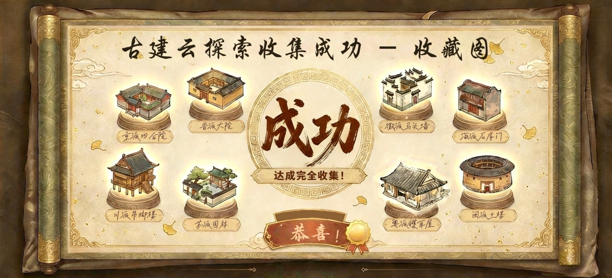

国风筑韵
首页
操作指南
互动探索
古建筑探索
数据可视化
京派
粤派
徽派
苏派
晋派
闽派
海派
川派
建筑基因
地图点位
古今对比
文化重心
古建筑总量
保护单位
消失与修缮
数字创新
当代延续
周边文创
完成
0
/
8
清除所有已探索点
下载成就图
下载
×

×
建筑物详情
北京四合院
山西大院
川渝吊脚楼
苏州庭院
安徽马头墙
福建土楼
广东镬耳墙
上海石库门
返回抽卡
前往数据页面